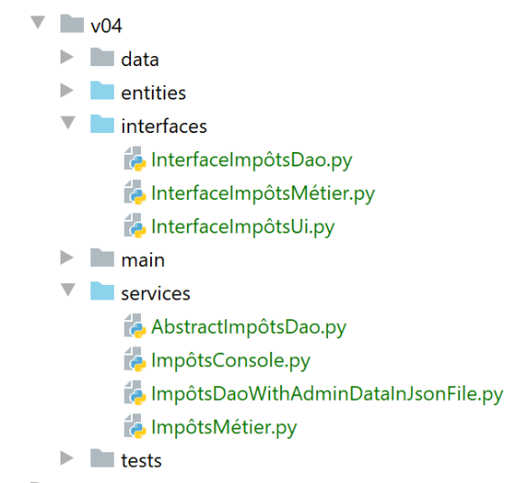
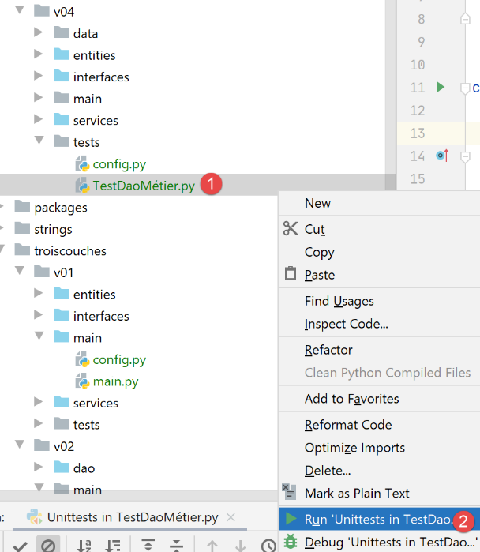

15. Application Exercise - Version 4

Here we revisit the exercise described in the |Version 3| section and now implement it using classes and interfaces. We will write two applications:
Application 1 will be as follows:

A main script [main] will instantiate a [DAO] layer and a [business] layer:
- the [DAO] layer will be responsible for managing data stored in text files and later in a database;
- the [business] layer will be responsible for calculating the tax;
In this application, there will be no user input: taxpayer data will be found in a text file whose name will be passed to the [main] module.
In Application 2, the user will enter taxpayer data via the keyboard. The architecture will then evolve as follows:

- The [DAO] (Data Access Object) layer handles access to external data
- the [business] layer handles business logic, in this case tax calculation. It does not handle the data. This data can come from two sources:
- the [DAO] layer for persistent data;
- the [UI] layer for data provided by the user.
- the [ui] (User Interface) layer handles interactions with the user;
- [main] acts as the orchestrator;
In the following, the [dao], [business], and [ui] layers will each be implemented using a class. The [business] and [dao] layers will be the same for both applications. This is why they have been combined into a single version of the application exercise.
15.1. Version 4 – Application 1
Version 4 calculates the tax for a list of taxpayers stored in a text file. It has the following architecture:

15.1.1. Entities

Entities are data classes. Their role is to encapsulate data and provide getters/setters that allow the data’s validity to be verified. Entities are exchanged between layers. A single entity can travel from the [ui] layer to the [dao] layer and vice versa.
15.1.1.1. The [ImpôtsError] class
We will use a custom exception class:
# -------------------------------
# exception class
from MyException import MyException
class TaxError(MyException):
pass
As soon as the [business] and [DAO] layers encounter a problem, they will raise this exception. It derives from the [MyException] class. It is therefore used as follows: [raise ImpôtsError(error_code, error_message)].
15.1.1.2. The [AdminData] class
The [AdminData] class encapsulates the constants used in tax calculations:
from BaseEntity import BaseEntity
# tax administration data
class AdminData(BaseEntity):
# keys excluded from the class state
excluded_keys = []
# allowed keys
@staticmethod
def get_allowed_keys() -> list:
return [
"limits",
"coeffr",
"coeffn",
"half-share_qf_threshold",
"single_income_limit_for_reduction",
"couple_income_limit_for_reduction",
"half-share_reduction_value",
"single_discount_limit",
"couple_discount_ceiling",
"couple_tax_ceiling_for_discount",
"single_tax_ceiling_for_discount",
"maximum_10_percent_deduction",
"minimum_10_percent_deduction"
]
- Line 5: The [AdminData] class extends the [BaseEntity] class described in the |BaseEntity| section. Recall that classes extending the [BaseEntity] class must define:
- a class attribute [excluded_keys] (line 7) that lists the object’s properties excluded when the object is converted to a dictionary;
- a static method [get_allowed_keys] (lines 10–26) that returns the list of properties accepted when the object is initialized with a dictionary;
We did not use setters to validate the data used to initialize an [AdminData] object. This is because this object is unique and defined by configuration, and therefore unlikely to contain errors.
15.1.1.3. The [TaxPayer] class
The [TaxPayer] class will model a taxpayer:
# imports
from BaseEntity import BaseEntity
from ImpôtsError import ImpôtsError
# a taxpayer
class TaxPayer(BaseEntity):
# models a taxpayer
# id: identifier
# married: yes / no
# children: number of children
# salary: annual salary
# tax: amount of tax due
# surcharge: tax surcharge
# tax credit: tax credit
# reduction: reduction in tax due
# rate: taxpayer's tax rate
# keys excluded from the class statement
excluded_keys = []
# allowed keys
@staticmethod
def get_allowed_keys() -> list:
return ['id', 'married', 'children', 'salary', 'tax', 'surcharge', 'discount', 'reduction', 'rate']
# properties
@property
def married(self) -> str:
return self.__married
@property
def children(self) -> int:
return self.__children
@property
def salary(self) -> int:
return self.__salary
@property
def tax(self) -> int:
return self.__tax
@property
def surcharge(self) -> int:
return self.__surcharge
@property
def discount(self) -> int:
return self.__discount
@property
def discount(self) -> int:
return self.__discount
@property
def rate(self) -> float:
return self.__rate
# setters
@married.setter
def married(self, married: str):
ok = isinstance(groom, str)
if ok:
groom = groom.strip().lower()
ok = groom == "yes" or groom == "no"
if ok:
self.__married = married
else:
raise TaxError(31, f"The 'married' attribute [{married}] must be set to either 'yes' or 'no'")
@children.setter
def children(self, children):
# children must be an integer >= 0
try:
children = int(children)
error = children < 0
except:
error = True
if not error:
self.__children = children
else:
raise TaxError(32, f"The children attribute [{children}] must be an integer >= 0")
@salary.setter
def salary(self, salary):
# salary must be an integer >= 0
try:
salary = int(salary)
error = salary < 0
except:
error = True
if not error:
self.__salary = salary
else:
raise TaxError(33, f"The salary attribute [{salary}] must be an integer >= 0")
@tax.setter
def tax(self, tax):
# tax must be an integer >= 0
try:
tax = int(tax)
error = tax < 0
except:
error = True
if not error:
self.__tax = tax
else:
raise TaxError(34, f"The tax attribute [{tax}] must be a number >= 0")
@discount.setter
def discount(self, discount):
# discount must be an integer >= 0
try:
discount = int(discount)
error = decote < 0
except:
error = True
if not error:
self.__discount = discount
else:
raise TaxError(35, f"The discount attribute [{discount}] must be a number >= 0")
@markup.setter
def surcharge(self, surcharge):
# surcôte must be an integer >= 0
try:
surcôte = int(surcôte)
error = surcôte < 0
except:
error = True
if not error:
self.__surplus = surplus
else:
raise TaxError(36, f"The surcharge attribute [{surcharge}] must be a number >= 0")
@reduction.setter
def discount(self, discount):
# The scale factor must be an integer greater than or equal to 0
try:
reduction = int(reduction)
error = discount < 0
except:
error = True
if not error:
self.__reduction = reduction
else:
raise TaxError(37, f"The discount attribute [{discount}] must be a number >= 0")
@rate.setter
def rate(self, rate):
# rate must be a real number >= 0
try:
rate = float(rate)
error = rate < 0
except:
error = True
if not error:
self.__rate = rate
else:
raise TaxError(38, f"The rate attribute [{rate}] must be a number >= 0")
Notes:
- The [TaxPayer] class encapsulates a taxpayer;
- line 7: the [TaxPayer] class derives from the [BaseEntity] class. It therefore has an identifier [id];
- line 20: no properties are excluded from the state of an [AdminData] object;
- lines 22–25: the class properties. These are explained in lines 9–17;
- lines 27–58: getters for the class attributes;
- lines 60–161: the setters for the class’s attributes. Recall that the advantage of a class encapsulating data over a simple dictionary is that the class can verify the validity of its properties using its setters; ### 15.1.2. The [dao] layer
We will group the layer implementations in a [services] folder. These classes will implement interfaces defined in the [interfaces] folder.

15.1.2.1. The [InterfaceImpôtsDao] interface
The [dao] layer will implement the following [InterfaceImpôtsDao] interface (file InterfaceImpôtsDao.py):
# imports
from abc import ABC, abstractmethod
# interface IImpôtsDao
from AdminData import AdminData
class TaxDaoInterface(ABC):
# list of tax brackets
@abstractmethod
def get_admindata(self) -> AdminData:
pass
# list of taxpayer data
@abstractmethod
def get_taxpayers_data(self) -> dict:
pass
# Writing the results of the tax calculation
@abstractmethod
def write_taxpayers_results(self, taxpayers_results: list):
pass
The interface defines three methods:
- [get_admindata]: is the method that retrieves the tax bracket table. Note that no information is provided on how to obtain this data. Later on, it will first be found in a text file and then in a database. It will be up to the classes that implement the interface to adapt to the data storage method. We will therefore have one class to retrieve the tax brackets from a text file and another to retrieve them from a database. Both will implement the [get_admindata] method;
- [get_taxpayers_data]: is the method that retrieves taxpayer data. Again, we do not specify where it will be found. We will only handle the case where it is in a text file;
- [write_taxpayers_results]: is the method that will persist the tax calculation results. We do not specify where. We will only handle the case where the results are persisted in a text file. The [taxpayers_results] parameter will be the list of results to be persisted; #### 15.1.2.2. The [AbstractImpôtsDao] class
The [dao] layer will be implemented by two classes:
- one will retrieve the data (taxpayers, results, tax brackets) from text files;
- the other will retrieve data (taxpayers, results) from text files and tax brackets from a database;
The two classes will differ only in how they handle tax brackets. Taxpayer data and tax calculation results will be managed in the same way. For this reason, we will manage them in a parent class [AbstractImpôtsDao]. The specific handling of tax brackets will be managed in two child classes:
- the [ImpôtsDaoWithAdminDataInJsonFile] class will retrieve the tax brackets from a text file in JSON format;
- the [ImpôtsDaoWithAdminDataInDatabase] class will retrieve the tax brackets from a database;
The parent class [AbstractImpôtsDao] will be as follows:
# imports
import codecs
import json
from abc import abstractmethod
from AdminData import AdminData
from TaxError import TaxError
from TaxDaoInterface import TaxDaoInterface
from TaxPayer import TaxPayer
# base class for the [DAO] layer
class AbstractTaxDao(TaxDaoInterface):
# taxpayers and their taxes will be stored in text files
# constructor
def __init__(self, config: dict):
# config[taxpayersFilename]: the name of the text file containing taxpayers
# config[resultsFilename]: the name of the JSON file containing the results
# config[errorsFilename]: the name of the error file
# store the parameters
self.taxpayers_filename = config.get("taxpayersFilename")
self.taxpayers_results_filename = config.get("resultsFilename")
self.errors_filename = config.get("errorsFilename")
# ------------------
# IImpôtsDao interface
# ------------------
# list of taxpayer data
def get_taxpayers_data(self) -> dict:
…
# writing taxpayer tax data
def write_taxpayers_results(self, taxpayers: list):
…
# reading tax brackets
@abstractmethod
def get_admindata(self) -> AdminData:
pass
- Line 13: The class [AbstractImpôtsDao] implements the interface [InterfaceImpôtsDao]. Therefore, it contains the three methods of this interface:
- [get_taxpayers_data]: line 31;
- [write_taxpayers_results]: line 35;
- [get_admindata]: line 40. This method will not be implemented by the [AbstractImpôtsDao] class, so it is declared abstract (line 39);
- line 16: the constructor receives a [config] dictionary containing the following information:
- [taxpayersFilename]: the name of the text file containing taxpayer data;
- [resultsFilename]: the name of the text file in which the results will be stored;
- [errorsFilename]: the name of the text file listing the errors encountered while processing the [taxpayersFilename] file;
The [get_taxpayers_data] method is as follows:
# list of taxpayer data
def get_taxpayers_data(self) -> dict:
# initializations
taxpayers_data = []
datafile = None
errors = []
try:
# Open the data file
datafile = open(self.taxpayers_filename, "r")
# process the current line of the file
line = datafile.readline()
# line number
line_number = 0
while line != '':
# increment the line number
lineNumber += 1
# remove whitespace
line = line.strip()
# ignore empty lines and comments
if line != "" and line[0] != "#":
try:
# retrieve the 4 fields id, married, children, salary that make up the taxpayer line
(id, married, children, salary) = line.split(",")
# create a new TaxPayer
taxpayers_data.append(
TaxPayer().fromdict({'id': id, 'married': married, 'children': children, 'salary': salary}))
except BaseException as error:
# log the error
errors.append(f"Line {linenumber}, {error}")
# read a new taxpayer line
line = datafile.readline()
# record any errors
if errors:
text = f"Analyzing file {self.taxpayers_filename}\n\n" + "\n".join(errors)
with codecs.open(self.errors_filename, "w", "utf-8") as fd:
fd.write(text)
# Return the result
return {"taxpayers": taxpayers_data, "errors": errors}
except BaseException as error:
# raise an ImpôtsError exception
raise ImpôtsError(11, f"{error}")
finally:
# close the file
if datafile:
datafile.close()
- line 4: taxpayer data (married, children, salary) will be placed in a list of objects of type [TaxPayer];
- lines 8-9: we open the taxpayer text file for reading. Its content has the following format:
Compared to previous versions:
- Each line in the [taxpayersFilename] file begins with the taxpayer ID, a single number;
- comments and empty lines are allowed;
- we will handle errors. Thus, lines 17, 19, and 21 must be marked as invalid. Errors are logged in a separate file;
Let’s continue reviewing the code:
- line 4: the data from the text file is transferred to the [taxPayersData] list;
- lines 14–31: The taxpayer file is read line by line;
- line 14: the end of the file is reached when an empty line is read (nothing—not even the end-of-line character \r\n);
- line 20: empty lines and comments are ignored. A line is a comment if, after removing whitespace before and after the text, the first character is the # character;
- line 24: a valid line consists of four fields separated by commas. These are retrieved. Assigning data to a four-element tuple fails if there are not exactly four data points assigned;
- line 25: if any of the four retrieved fields [id, married, children, salary] is invalid, then the [BaseEntity.fromdict] method will raise a [MyException] exception;
- lines 25–26: a [TaxPayer] object is added to the [taxpayers_data] list of taxpayers;
- lines 27–29: any errors are collected in a list [errors]. This list was created on line 6;
- lines 33–36: the list of encountered errors is saved to the text file [errorsFilename]. There are two types of errors:
- a row did not have the correct number of expected fields;
- the information in the row was incorrect and failed to construct a [TaxPayer] object;
- lines 39–41: any error (BaseException) is caught and propagated by wrapping it in a [TaxPayerError] type;
- lines 42–45: in all cases, whether successful or not, the taxpayer text file is closed if it was opened;
The [write_taxpayers_results] method must produce a JSON file in the following format:
[
{
"id": 1,
"married": "yes",
"children": 2,
"salary": 55555,
"tax": 2814,
"surcharge": 0,
"rate": 0.14,
"discount": 0,
"reduction": 0
},
{
"id": 2,
"married": "yes",
"children": 2,
"salary": 50000,
"tax": 1384,
"surcharge": 0,
"rate": 0.14,
"discount": 384,
"reduction": 347
},
{
"id": 3,
"married": "yes",
"children": 3,
"salary": 50000,
"tax": 0,
"markup": 0.
"rate": 0.14,
"discount": 720,
"discount": 0
},
…
]
The [write_taxpayers_results] method is as follows:
# writing taxpayers' tax results
def write_taxpayers_results(self, taxpayers: list):
# writing the results to a JSON file
# taxpayers: list of TaxPayer objects
# (id, married, children, salary, tax, surcharge, discount, reduction, rate)
# the [taxpayers] list is saved to the text file [self.taxpayers_results_filename]
file = None
try:
# Open the results file
file = codecs.open(self.taxpayers_results_filename, "w", "utf8")
# Create the list to serialize to JSON
mapping = map(lambda taxpayer: taxpayer.asdict(), taxpayers)
# serialize to JSON
json.dump(list(mapping), file, ensure_ascii=False)
except BaseException as error:
# Re-raise the error as a different type
raise TaxError(12, f"{error}")
finally:
# close the file if it was opened
if file:
file.close()
- line 2: the method receives a list of taxpayers [taxpayers] that it must save to the text file [self.taxpayers_results_filename] in JSON format;
- line 10: creation of the UTF-8 results file;
- line 12: here we introduce the [map] function, whose syntax here is [map (function, list1)]. The [function] is applied to each element of [list1] and produces a new element that populates a list [list2]. Finally, for each i:
list2[i] = function(list1[i])
Here, [list1] is the list [taxPayers], a list of objects of type [TaxPayer]. The function [function] is expressed here as a so-called [lambda] function that describes the transformation applied to an element [taxpayer] of the list [taxpayers]: each [taxpayer] element is replaced by its dictionary [taxpayer.asdict()]. Finally, the resulting list [list2] is the list of dictionaries of the elements in the [taxpayers] list;
- line 12: the result returned by the [map] function is not the list [list2] but an object of type [map]. To obtain [list2], you must use the expression [list(mapping)] (line 14);
- line 14: the list [list2] is saved in JSON format to the file [self.taxpayers_results_filename];
- lines 15–17: any type of exception is caught and wrapped in an [ImpôtsError] before being rethrown (line 17);
- lines 19–21: in all cases, whether successful or not, the results file is closed if it was opened; #### 15.1.2.3. Class [ImpôtsDaoWithAdminDataInJsonFile]
The [ImpôtsDaoWithAdminDataInJsonFile] class will derive from the [AbstractImpôtsDao] class and implement the [getAdminData] method that its parent class has not implemented. It will retrieve tax administration data from a JSON file:
{
"limits": [9964, 27519, 73779, 156244, 0],
"coeffr": [0, 0.14, 0.3, 0.41, 0.45],
"coeffn": [0, 1394.96, 5798, 13913.69, 20163.45],
"half-share_income_limit": 1551,
"single_income_limit_for_reduction": 21037,
"couple_income_limit_for_reduction": 42074,
"half-share_reduction_value": 3797,
"single_discount_limit": 1196,
"couple_discount_ceiling": 1970,
"couple_tax_ceiling_for_discount": 2627,
"single_tax_ceiling_for_discount": 1595,
"maximum_10_percent_deduction": 12502,
"minimum_ten-percent_deduction": 437
}
The [ImpôtsDaoWithAdminDataInJsonFile] class is as follows:
# imports
import codecs
import json
from AbstractTaxDao import AbstractTaxDao
from AdminData import AdminData
from TaxError import TaxError
# An implementation of the [dao] layer where tax administration data is stored in a JSON file
class TaxDaoWithAdminDataInJsonFile(AbstractTaxDao):
# constructor
def __init__(self, config: dict):
# config[admindataFilename]: the name of the JSON file containing the tax administration data
# config[taxpayersFilename]: the name of the text file containing taxpayer data
# config[resultsFilename]: the name of the JSON file containing the results
# config[errorsFilename]: the name of the error file
# Initialization of the Parent class
AbstractTaxesDao.__init__(self, config)
# reading data from the tax authority
file = None
try:
# Open the JSON file containing tax data in read mode
file = codecs.open(config["admindataFilename"], "r", "utf8")
# Transfer the contents of the JSON file to an [AdminData] object
self.admindata = AdminData().fromdict(json.load(file))
except BaseException as error:
# Re-raise the error as an [ImpôtsError]
raise ImpôtsError(21, f"{error}")
finally:
# Close the file if it was opened
if file:
file.close()
# -------------
# interface
# -------------
# retrieving data from the tax administration
# the method returns an [AdminData] object
def get_admindata(self) -> AdminData:
return self.admindata
- Line 11: The [ImpôtsDaoWithAdminDataInJsonFile] class inherits from the [AbstractImpôtsDao] class. As such, it implements the [InterfaceImpôtsDao] interface;
- line 13: the constructor receives as a parameter a dictionary containing the information from lines 14–17;
- line 20: the parent class is initialized;
- line 24: the JSON file containing the tax administration data is opened;
- line 25: the UTF-8 file containing the tax authority data is opened;
- line 27: the file’s contents are read and placed in the [self.admindata] object of type [AdminData]. The keys in the JSON file must match the properties accepted for an [AdminData] object; otherwise, the [fromdict] method will throw an exception;
- lines 28–30: exception handling. Any exceptions that may occur are wrapped in an [ImpôtsError] type before being rethrown;
- lines 32–34: the file is closed if it was opened;
- lines 42–43: implementation of the [get_admindata] method of the [InterfaceImpôtsDao] interface; ### 15.1.3. The [business] layer
15.1.3.1. The [InterfaceImpôtsMétier] interface
The interface for the [business] layer will be as follows:
# imports
from abc import ABC, abstractmethod
from AdminData import AdminData
from TaxPayer import TaxPayer
# BusinessTaxInterface
class BusinessTaxInterface(ABC):
# Calculate tax for 1 taxpayer
@abstractmethod
def calculate_tax(self, taxpayer: TaxPayer, admindata: AdminData):
pass
- The [BusinessTaxInterface] interface defines a single method:
- line 12: the [calculate_tax] method calculates the tax for a single taxpayer [taxpayer]. [admindata] is the [AdminData] object encapsulating the tax administration data;
- Line 12: The [calculate_tax] method does not return a result. The data obtained (tax, surcharge, discount, reduction, rate) are included in the [taxpayer] parameter: before the call, these attributes are empty; after the call, they have been initialized; #### 15.1.3.2. The [BusinessTaxes] class
The [ImpôtsMétier] class implements the [InterfaceImpôtsMétier] interface as follows:

The class methods are derived from the [impôts_module_02] module in the section |The [impots.v02.modules.impôts_module_02] module|. We have limited the method parameters to just two:
- taxpayer(id, married, children, salary, tax, discount, surcharge, reduction, rate): the object representing a taxpayer and their tax;
- admindata: the object encapsulating the tax administration data;
We demonstrate the changes made using a method;
# tax calculation - phase 1
# ----------------------------------------
def calculate_tax(self, taxpayer: TaxPayer, admindata: AdminData):
# taxpayer(id, married, children, salary, tax, deduction, surcharge, reduction, rate)
# admindata: data from the tax authority
# tax calculation with children
self.calculate_tax_2(taxpayer, admindata)
# the results are in taxpayer
rate1 = taxpayer.rate
surcharge1 = taxpayer.surcharge
tax1 = taxpayer.tax
# Calculate tax without children
if taxpayer.children != 0:
# calculate tax for the same taxpayer without children
taxpayer2 = TaxPayer().fromdict(
{'id': 0, 'married': taxpayer.married, 'children': 0, 'salary': taxpayer.salary})
self.calculate_tax_2(taxpayer2, admindata)
# the results are in taxpayer2
rate2 = taxpayer2.rate
surcharge2 = taxpayer2.surcharge
tax2 = taxpayer2.tax
# Apply the family quotient cap
if taxpayer.children < 3:
# FAMILY QUOTIENT CAP (HALF-PART) in euros for the first 2 children
tax2 = tax2 - taxpayer.children * admindata.half-share_family_quota_cap
else:
# HALF-PART_FQ_CAP euros for the first 2 children, double that for subsequent children
tax2 = tax2 - 2 * admindata.half-share_threshold - (taxpayer.children - 2) \
* 2 * admindata.half_share_ceiling
else:
# if the taxpayer has no children, then tax2 = tax1
tax2 = tax1
# take the higher tax amount with the corresponding rate and surcharge
(tax, surcharge, rate) = (tax1, surcharge1, rate1) if tax1 >= tax2 else (
tax2, tax2 - tax1 + surcharge2, rate2)
# partial results
taxpayer.tax = tax
taxpayer.surcharge = surcharge
taxpayer.rate = rate
# calculation of a possible discount
self.get_discount(taxpayer, admindata)
taxpayer.tax -= taxpayer.discount
# Calculate any tax reduction
self.get_reduction(taxpayer, admindata)
taxpayer.tax -= taxpayer.reduction
# result
taxpayer.tax = math.floor(taxpayer.tax)
- line 3: The [calculate_tax] method is the only method in the [InterfaceImpôtsMétier] interface. It takes two parameters:
- [tapPayer]: the taxpayer for whom the tax is being calculated;
- [admindata]: the object encapsulating the tax administration data;
- the results of the calculation are encapsulated in the [taxpayer] parameter (lines 40–50). The content of this object is therefore not the same before and after the method is called; ### 15.1.4. Tests for the [dao] and [business] layers

- [TestDaoMétier] is the UnitTest class for testing the [dao] and [business] layers;
- [config] is the test configuration file;
The [config] configuration is as follows:
def configure():
import os
# step 1 ------
# Python path configuration
# directory of this file
script_dir = os.path.dirname(os.path.abspath(__file__))
# root_dir
root_dir = "C:/Data/st-2020/dev/python/cours-2020/python3-flask-2020/classes"
# Application's absolute dependencies
absolute_dependencies = [
f"{script_dir}/../entities",
f"{script_dir}/../interfaces",
f"{script_dir}/../services",
f"{root_dir}/02/entities",
]
# Set the syspath
from myutils import set_syspath
set_syspath(absolute_dependencies)
# step 2 ------
# application configuration
config = {
# absolute paths to application files
"admindataFilename": f"{script_dir}/../data/input/admindata.json"
}
# instantiation of application layers
from ImpôtsDaoWithAdminDataInJsonFile import ImpôtsDaoWithAdminDataInJsonFile
from TaxBusinessLogic import TaxBusinessLogic
dao = TaxDaoWithAdminDataInJsonFile(config)
business = TaxBusiness()
# We add the layer instances to the config
config["dao"] = dao
config["businessLogic"] = businessLogic
# return the config
return config
- lines 4–23: We configure the Python path for the tests;
- lines 32–41: instantiate the [dao] and [business] layers. Store their references in the [config] dictionary;
- line 44: return this dictionary;
The [TestDaoMétier] test class is as follows:
import unittest
def get_config() -> dict:
# application configuration
import config
# we return the configuration
return config.configure()
class TestDaoMétier(unittest.TestCase):
# Executed before each test method
def setUp(self) -> None:
# retrieve the test configuration
config = get_config()
# store some information
self.business = config['business']
self.admindata = config['dao'].get_admindata()
def test_1(self) -> None:
from TaxPayer import TaxPayer
# {'married': 'yes', 'children': 2, 'salary': 55555,
# 'tax': 2814, 'surcharge': 0, 'discount': 0, 'reduction': 0, 'rate': 0.14}
taxpayer = TaxPayer().fromdict({"married": "yes", "children": 2, "salary": 55555})
self.occupation.calculate_tax(taxpayer, self.admindata)
# verification
self.assertAlmostEqual(taxpayer.tax, 2815, delta=1)
self.assertEqual(taxpayer.discount, 0)
self.assertEqual(taxpayer.reduction, 0)
self.assertAlmostEqual(taxpayer.rate, 0.14, delta=0.01)
self.assertEqual(taxpayer.surcharge, 0)
def test_2(self) -> None:
from TaxPayer import TaxPayer
# {'married': 'yes', 'children': 2, 'salary': 50000,
# 'tax': 1384, 'surcharge': 0, 'discount': 384, 'reduction': 347, 'rate': 0.14}
taxpayer = TaxPayer().fromdict({'married': 'yes', 'children': 2, 'salary': 50000})
self.occupation.calculate_tax(taxpayer, self.admindata)
# checks
self.assertAlmostEqual(taxpayer.tax, 1384, delta=1)
self.assertAlmostEqual(taxpayer.discount, 384, delta=1)
self.assertAlmostEqual(taxpayer.reduction, 347, delta=1)
self.assertAlmostEqual(taxpayer.rate, 0.14, delta=0.01)
self.assertEqual(taxpayer.surcharge, 0)
def test_3(self) -> None:
from TaxPayer import TaxPayer
# {'married': 'yes', 'children': 3, 'salary': 50000,
# 'tax': 0, 'surcharge': 0, 'discount': 720, 'reduction': 0, 'rate': 0.14}
taxpayer = TaxPayer().fromdict({'married': 'yes', 'children': 3, 'salary': 50000})
self.business.calculate_tax(taxpayer, self.admindata)
# checks
self.assertEqual(taxpayer.tax, 0)
self.assertAlmostEqual(taxpayer.discount, 720, delta=1)
self.assertEqual(taxpayer.reduction, 0)
self.assertAlmostEqual(taxpayer.rate, 0.14, delta=0.01)
self.assertEqual(taxpayer.surcharge, 0)
def test_4(self) -> None:
from TaxPayer import TaxPayer
# {'married': 'no', 'children': 2, 'salary': 100000,
# 'tax': 19884, 'surcharge': 4480, 'discount': 0, 'reduction': 0, 'rate': 0.41}
taxpayer = TaxPayer().fromdict({'married': 'no', 'children': 2, 'salary': 100000})
self.job.calculate_tax(taxpayer, self.admindata)
# checks
self.assertAlmostEqual(taxpayer.tax, 19884, delta=1)
self.assertEqual(taxpayer.discount, 0)
self.assertEqual(taxpayer.reduction, 0)
self.assertAlmostEqual(taxpayer.rate, 0.41, delta=0.01)
self.assertAlmostEqual(taxpayer.surcharge, 4480, delta=1)
def test_5(self) -> None:
from TaxPayer import TaxPayer
# {'married': 'no', 'children': 3, 'salary': 100000,
# 'tax': 16782, 'surcharge': 7176, 'discount': 0, 'reduction': 0, 'rate': 0.41}
taxpayer = TaxPayer().fromdict({'married': 'no', 'children': 3, 'salary': 100000})
self.job.calculate_tax(taxpayer, self.admindata)
# checks
self.assertAlmostEqual(taxpayer.tax, 16782, delta=1)
self.assertEqual(taxpayer.discount, 0)
self.assertEqual(taxpayer.reduction, 0)
self.assertAlmostEqual(taxpayer.rate, 0.41, delta=0.01)
self.assertAlmostEqual(taxpayer.surcharge, 7176, delta=1)
def test_6(self) -> None:
from TaxPayer import TaxPayer
# {'married': 'yes', 'children': 3, 'salary': 100000,
# 'tax': 9200, 'surcharge': 2180, 'discount': 0, 'reduction': 0, 'rate': 0.3}
taxpayer = TaxPayer().fromdict({'married': 'yes', 'children': 3, 'salary': 100000})
self.occupation.calculate_tax(taxpayer, self.admindata)
# checks
self.assertAlmostEqual(taxpayer.tax, 9200, delta=1)
self.assertEqual(taxpayer.discount, 0)
self.assertEqual(taxpayer.reduction, 0)
self.assertAlmostEqual(taxpayer.rate, 0.3, delta=0.01)
self.assertAlmostEqual(taxpayer.surcharge, 2180, delta=1)
def test_7(self) -> None:
from TaxPayer import TaxPayer
# {'married': 'yes', 'children': 5, 'salary': 100000,
# 'tax': 4230, 'surcharge': 0, 'discount': 0, 'reduction': 0, 'rate': 0.14}
taxpayer = TaxPayer().fromdict({'married': 'yes', 'children': 5, 'salary': 100000})
self.job.calculate_tax(taxpayer, self.admindata)
# checks
self.assertAlmostEqual(taxpayer.tax, 4230, delta=1)
self.assertEqual(taxpayer.discount, 0)
self.assertEqual(taxpayer.reduction, 0)
self.assertAlmostEqual(taxpayer.rate, 0.14, delta=0.01)
self.assertEqual(taxpayer.surcharge, 0)
def test_8(self) -> None:
from TaxPayer import TaxPayer
# {'married': 'no', 'children': 0, 'salary': 100000,
# 'tax': 22986, 'surcharge': 0, 'discount': 0, 'reduction': 0, 'rate': 0.41}
taxpayer = TaxPayer().fromdict({'married': 'no', 'children': 0, 'salary': 100000})
self.job.calculate_tax(taxpayer, self.admindata)
# checks
self.assertAlmostEqual(taxpayer.tax, 22986, delta=1)
self.assertEqual(taxpayer.discount, 0)
self.assertEqual(taxpayer.reduction, 0)
self.assertAlmostEqual(taxpayer.rate, 0.41, delta=0.01)
self.assertEqual(taxpayer.surcharge, 0)
def test_9(self) -> None:
from TaxPayer import TaxPayer
# {'married': 'yes', 'children': 2, 'salary': 30000,
# 'tax': 0, 'surcharge': 0, 'discount': 0, 'reduction': 0, 'rate': 0}
taxpayer = TaxPayer().fromdict({'married': 'yes', 'children': 2, 'salary': 30000})
self.job.calculate_tax(taxpayer, self.admindata)
# checks
self.assertEqual(taxpayer.tax, 0)
self.assertEqual(taxpayer.discount, 0)
self.assertEqual(taxpayer.reduction, 0)
self.assertAlmostEqual(taxpayer.rate, 0.0, delta=0.01)
self.assertEqual(taxpayer.surcharge, 0)
def test_10(self) -> None:
from TaxPayer import TaxPayer
# {'married': 'no', 'children': 0, 'salary': 200000,
# 'tax': 64210, 'surcharge': 7498, 'discount': 0, 'reduction': 0, 'rate': 0.45}
taxpayer = TaxPayer().fromdict({'married': 'no', 'children': 0, 'salary': 200000})
self.occupation.calculate_tax(taxpayer, self.admindata)
# checks
self.assertAlmostEqual(taxpayer.tax, 64210, 1)
self.assertEqual(taxpayer.discount, 0)
self.assertEqual(taxpayer.reduction, 0)
self.assertAlmostEqual(taxpayer.rate, 0.45, delta=0.01)
self.assertAlmostEqual(taxpayer.surcharge, 7498, delta=1)
def test_11(self) -> None:
from TaxPayer import TaxPayer
# {'married': 'yes', 'children': 3, 'salary': 200000,
# 'tax': 42842, 'surcharge': 17283, 'discount': 0, 'reduction': 0, 'rate': 0.41}
taxpayer = TaxPayer().fromdict({'married': 'yes', 'children': 3, 'salary': 200000})
self.job.calculate_tax(taxpayer, self.admindata)
# checks
self.assertAlmostEqual(taxpayer.tax, 42842, 1)
self.assertEqual(taxpayer.discount, 0)
self.assertEqual(taxpayer.reduction, 0)
self.assertAlmostEqual(taxpayer.rate, 0.41, delta=0.01)
self.assertAlmostEqual(taxpayer.surcharge, 17283, delta=1)
if __name__ == '__main__':
unittest.main()
Comments
- line 11: the test class extends the [unittest.TestCase] class;
- lines 13–19: In a UnitTest, the [setUp] method is executed before each of the [test_] methods;
- line 16: the configuration from the [config] script discussed earlier is retrieved;
- line 18: a reference to the [business] layer is stored;
- line 19: we request the [AdminData] object—which encapsulates tax administration data—from the [DAO] layer and store it;
- lines 21–173: 11 tests whose results were verified on the official 2019 tax website |https://www3.impots.gouv.fr/simulateur/calcul_impot/2019/simplifie/index.htm|;
- lines 21–33: all tests were built using the same template;
- line 22: import the [TaxPayer] class;
- line 24: taxpayer being tested;
- line 25: expected results;
- line 26: creation of the taxpayer’s [TaxPayer] object;
- line 27: calculation of their tax. The result is in [taxpayer];
- lines 29–33: verification of the results obtained;
- line 29: we verify the tax amount to the nearest euro. Tests have indeed shown that the results obtained by the algorithm in this document may differ from official figures by up to 1 euro;
Running the tests yields the following results:

Testing started at 16:08 ...
C:\Data\st-2020\dev\python\cours-2020\python3-flask-2020\venv\Scripts\python.exe "C:\Program Files\JetBrains\PyCharm Community Edition 2020.1.2\plugins\python-ce\helpers\pycharm\_jb_unittest_runner.py" --path C:/Data/st-2020/dev/python/cours-2020/python3-flask-2020/impots/v04/tests/TestDaoMétier.py
Launching unit tests with arguments python -m unittest C:/Data/st-2020/dev/python/cours-2020/python3-flask-2020/impots/v04/tests/TestDaoMétier.py in C:\Data\st-2020\dev\python\cours-2020\python3-flask-2020\impots\v04\tests
Ran 11 tests in 0.055s
OK
Process finished with exit code 0
15.1.5. Main script

The main script is configured by the following [config] script:
def configure():
import os
# step 1 ------
# Python path configuration
# directory of this file
script_dir = os.path.dirname(os.path.abspath(__file__))
# root_dir
root_dir = "C:/Data/st-2020/dev/python/cours-2020/python3-flask-2020/classes"
# Application dependencies
absolute_dependencies = [
# local dependencies
f"{script_dir}/../../entities",
f"{script_dir}/../../interfaces",
f"{script_dir}/../../services",
f"{root_dir}/02/entities",
]
# Set the syspath
from myutils import set_syspath
set_syspath(absolute_dependencies)
# step 2 ------
# application configuration
config = {
# absolute paths to application files
"taxpayersFilename": f"{script_dir}/../../data/input/taxpayersdata.txt",
"resultsFilename": f"{script_dir}/../../data/output/results.json",
"admindataFilename": f"{script_dir}/../../data/input/admindata.json",
"errorsFilename": f"{script_dir}/../../data/output/errors.txt"
}
# Instantiating the application layers
from ImpôtsDaoWithAdminDataInJsonFile import ImpôtsDaoWithAdminDataInJsonFile
from TaxBusinessLogic import TaxBusinessLogic
dao = TaxDaoWithAdminDataInJsonFile(config)
business = TaxBusiness()
# We add the layer instances to the config
config["dao"] = dao
config["businessLogic"] = businessLogic
# return the config
return config
It is similar to the one used for testing the [business] and [dao] layers.
The main script [main.py] is as follows:
# configure the application
import config
config = config.configure()
# imports
from ImpôtsError import ImpôtsError
# Retrieve the application layers (they are already instantiated)
dao = config["dao"]
job = config["job"]
try:
# Retrieve tax brackets
admindata = dao.get_admindata()
# read taxpayer data
taxpayers = dao.get_taxpayers_data()["taxpayers"]
# any taxpayers?
if not taxpayers:
raise ImpôtsError(51, f"No valid taxpayers in the file {config['taxpayersFilename']}")
# Calculate taxpayers' taxes
for taxpayer in taxpayers:
# taxpayer is both an input and output parameter
# taxpayer will be modified
business.calculate_tax(taxpayer, admindata)
# writing results to a text file
dao.write_taxpayers_results(taxpayers)
except ImpôtsError as error:
# display the error
print(f"The following error occurred: {error}")
finally:
# Done
print("Work completed...")
Notes
- lines 2–4: we retrieve the application configuration. We also know that the application’s Python Path has been built;
- lines 9–11: we retrieve references to the [business] and [DAO] layers;
- line 15: we retrieve data from the tax administration;
- line 17: we retrieve the list of taxpayers for whom taxes must be calculated;
- lines 19–20: if this list is empty, an exception is raised;
- lines 22–25: calculate the tax for the various [taxpayer] objects using the [business] layer;
- line 27: [taxpayers] is now a list of [TaxPayer] objects where the attributes (tax, discount, surcharge, reduction, rate) have been assigned values. This list is written to a JSON file;
- lines 28–30: catch any potential errors;
- lines 31–33: executed in all cases;
Running the script yields the same results as in previous versions. The taxpayer error file was a new feature in this version. After running the [main] script, its contents are as follows:
Analyzing the file C:\Data\st-2020\dev\python\cours-2020\python3-flask-2020\impots\v04\main\01/../../data/input/taxpayersdata.txt
Line 17, not enough values to unpack (expected 4, got 2)
Line 19, too many values to unpack (expected 4)
Line 21, MyException[1, The identifier of an entity <class 'TaxPayer.TaxPayer'> must be an integer >=0]
The erroneous lines were as follows:
# valid data: id, married, children, salary
1,yes,2,55555
2,yes,2,50000
3,yes,3,50000
4,no,2,100000
5,no,3,100000
6,yes,3,100000
7,yes,5,100000
8,no,0,100000
9,yes,2,30000
10,no,0,200,000
11,yes,3,200000
# there may be empty rows
# we create erroneous lines
# Not enough values
11,12
# too many values
12,yes,3,200000, x, y
# incorrect values
x,x,x,x
15.2. Version 4 – Application 2
In this version, the user enters the list of taxpayers via the keyboard. The application architecture will be as follows:

A new module appears: the [ui] (User Interface) layer, which will interact with the user. This layer will have an interface and will be implemented by a class.

15.2.1. The [InterfaceImpôtsUi] interface
# imports
from abc import ABC, abstractmethod
# interface InterfaceImpôtsUI
class InterfaceImpôtsUi(ABC):
# execution of the class implementing the interface
@abstractmethod
def run(self):
pass
The [InterfaceImpôtsUi] interface will have only one method, the one in lines 8–10. The interface will be implemented here with a console application, but it could also be implemented with a graphical user interface. The parameters passed to the [run] method would not be the same in both implementations. To work around this problem, the usual approach is to:
- do not pass any parameters to the [run] method (or pass the minimum number of parameters);
- pass parameters to the constructor of the class implementing the interface. These may differ from one implementation to another. These parameters are stored as class attributes;
- ensure that the [run] method uses these class attributes (self.x);
This method allows for a very general interface that is specified by the parameters of the constructors of each implementation class. This method was already used for modular version #1.
15.2.2. The [ImpôtsConsole] class
The [ImpôtsConsole] class implements the [InterfaceImpôtsUi] interface as follows:
# imports
import re
from InterfaceTaxUi import InterfaceTaxUi
from TaxPayer import TaxPayer
# [UI] layer
class ConsoleTaxes(TaxUI):
# constructor
def __init__(self, config: dict):
# store the settings
self.admindata = config['dao'].get_admindata()
self.business = config['business']
def run(self):
# Interactive user dialogue
finished = False
while not finished:
# Is the taxpayer married?
married = input("Is the taxpayer married or in a civil partnership (yes/no) (* to stop): ").strip().lower()
# Checking the validity of the input
while married != "yes" and married != "no" and married != "*":
# error message
print("Enter yes, no, or *")
# ask again
married = input("Is the taxpayer married or in a civil partnership (yes/no) (* to stop): ").strip().lower()
# done?
if married == "*":
# dialogue finished
return
# number of children
children = input("Number of children: ").strip()
# Checking the validity of the input
if not re.match(r"^\d+$", children):
# error message
print("Enter a positive integer or zero")
# try again
children = input("Number of children: ").strip()
# annual salary
salary = input("Annual salary: ").strip()
# Checking the validity of the input
if not re.match(r"^\d+$", salary):
# error message
print("Enter a positive integer or zero")
# try again
salary = input("Annual salary: ").strip()
# calculate tax
taxpayer = TaxPayer().fromdict({'id': 0, 'married': married, 'children': int(children), 'salary': int(salary)})
self.occupation.calculate_tax(taxpayer, self.admindata)
# display
print(f"Tax for taxpayer = {taxpayer}\n\n")
# next taxpayer
- Line 9: The [TaxConsole] class implements the [TaxUiInterface] interface;
- line 11: the class constructor receives a parameter, the [config] dictionary containing the application configuration;
- line 13: data from the tax authority is retrieved to calculate the tax;
- line 14: a reference to the [business] layer is stored;
- line 16: implementation of the [run] method of the interface;
- lines 19–53: user interaction. This involves
- asking the taxpayer for three pieces of information (marital status, children, salary);
- calculating their tax;
- displaying the result;
- the dialogue ends when the user answers * to the first question;
- lines 20–27: the program asks if the taxpayer is married and checks the validity of the response;
- lines 29–31: if the user answered ‘*’ to the question, the dialogue ends;
- lines 32–39: the taxpayer is asked how many children they have, and the validity of the response is checked;
- lines 40–47: the taxpayer’s annual salary is requested, and the validity of the response is verified;
- lines 48–50: using this information, the [business] layer calculates the taxpayer’s tax;
- line 52: the tax amount is displayed; ### 15.2.3. The main script
The main script [main] is configured by the following [config] file:
def configure():
import os
# step 1 ------
# Python path configuration
# directory of this file
script_dir = os.path.dirname(os.path.abspath(__file__))
# root_dir
root_dir = "C:/Data/st-2020/dev/python/cours-2020/python3-flask-2020/classes"
# Application dependencies
absolute_dependencies = [
# local dependencies
f"{script_dir}/../../entities",
f"{script_dir}/../../interfaces",
f"{script_dir}/../../services",
f"{root_dir}/02/entities",
]
# Set the syspath
from myutils import set_syspath
set_syspath(absolute_dependencies)
# step 2 ------
# application configuration
config = {
# absolute paths to application files
"admindataFilename": f"{script_dir}/../../data/input/admindata.json",
}
# instantiation of application layers
from ImpôtsDaoWithAdminDataInJsonFile import ImpôtsDaoWithAdminDataInJsonFile
from TaxBusinessLogic import TaxBusinessLogic
from TaxConsole import TaxConsole
# DAO layer
dao = ImpôtsDaoWithAdminDataInJsonFile(config)
# business layer
business = ImpôtsMétier()
# add the layer instances to the config
config["dao"] = dao
config["business"] = business
# UI layer
ui = TaxConsole(config)
config["ui"] = ui
# Return the configuration
return config
The main script is as follows (main.py):
# configure the application
import config
config = config.configure()
# imports
from ImpôtsError import ImpôtsError
# Retrieve the application layers (they are already instantiated)
ui = config["ui"]
# code
try:
# execute the [ui] layer
ui.run()
except ImpôtsError as error:
# display the error message
print(f"The following error occurred: {error}")
finally:
# executed in all cases
print("Job completed...")
- lines 1-4: retrieve the application configuration;
- line 10: retrieves a reference to the [ui] layer;
- lines 12-21: the code structure is the same as in the previous application: code wrapped in a try/catch block to catch any potential exceptions;
- line 15: we ask the [ui] layer to execute: the user interaction then begins;
- lines 16–18: catch any potential exceptions;
Here is an example of execution:
C:\Data\st-2020\dev\python\cours-2020\python3-flask-2020\venv\Scripts\python.exe C:/Data/st-2020/dev/python/cours-2020/python3-flask-2020/impots/v04/main/02/main.py
Is the taxpayer married or in a civil partnership (yes/no) (* to stop): yes
Number of children: 3
Annual salary: 200000
Taxpayer's tax = {"id": 0, "married": "yes", "children": 3, "salary": 200000, "tax": 42,842, "surcharge": 17,283, "rate": 0.41, "discount": 0, "reduction": 0}
Is the taxpayer married or in a civil partnership (yes/no) (* to stop): *
Process completed...
Process finished with exit code 0